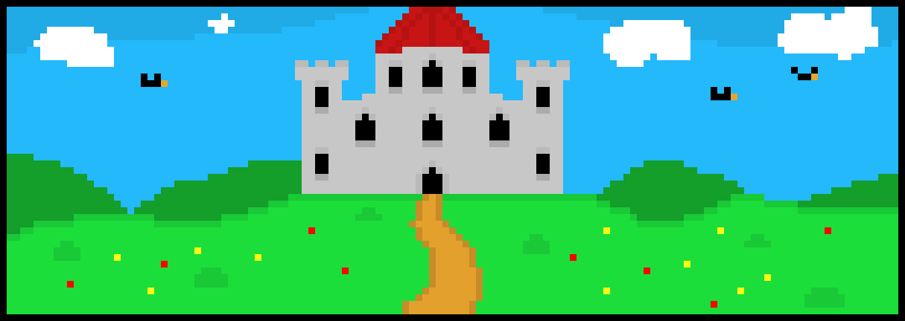
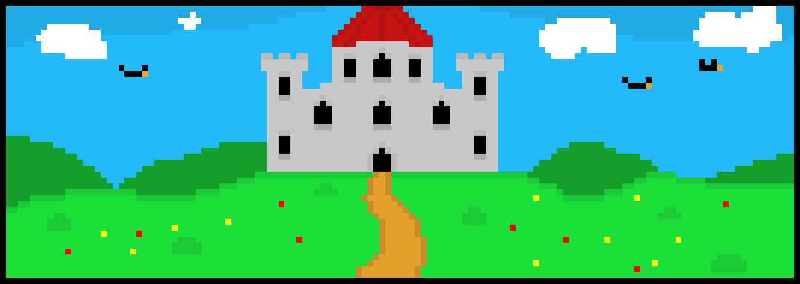
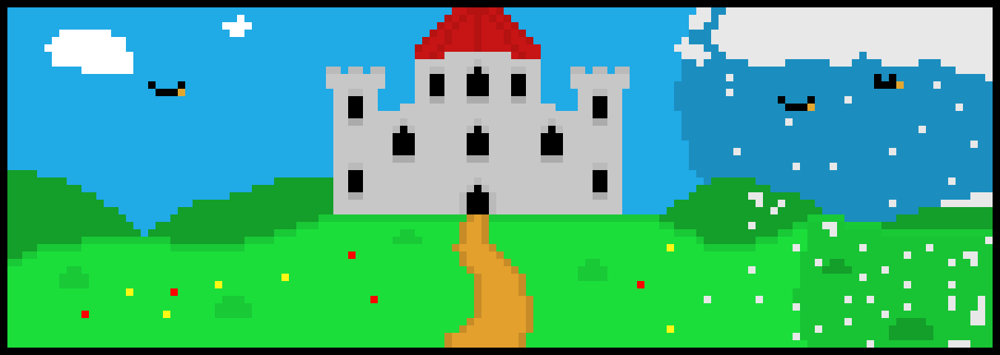
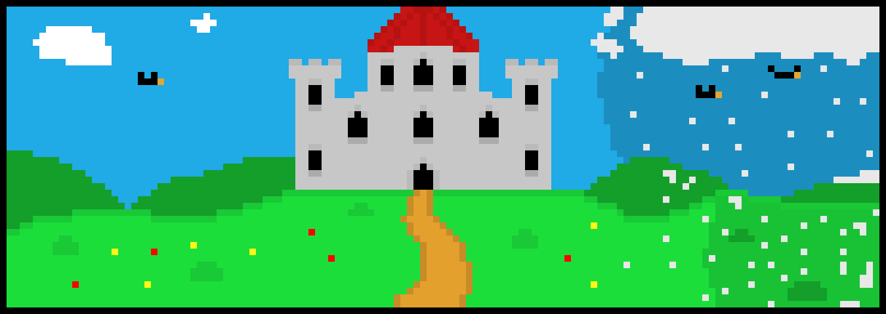
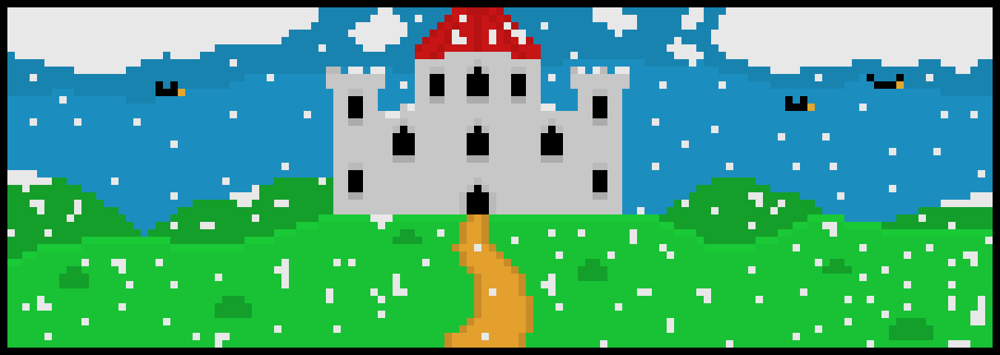
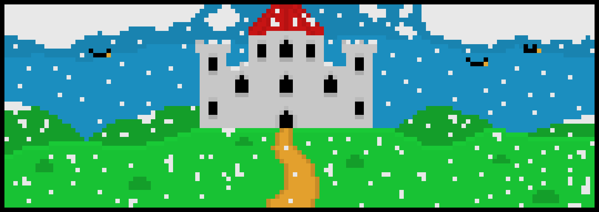

Tout commença il y a plus de 700 ans, tout était paisible, le royaume était prospére jusqu'au jour ou un tremblemnt se fit ressentir.
C'est alors qu'un vent glaciale se fut ressentir a travers tous le royaume, quelques jours plus tard l'hiver apparu.





